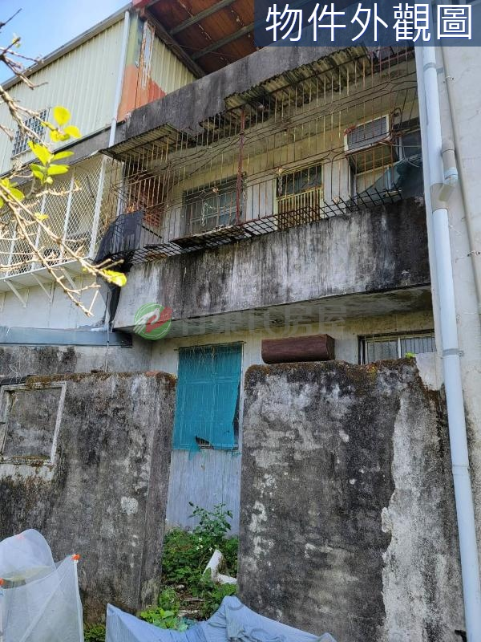
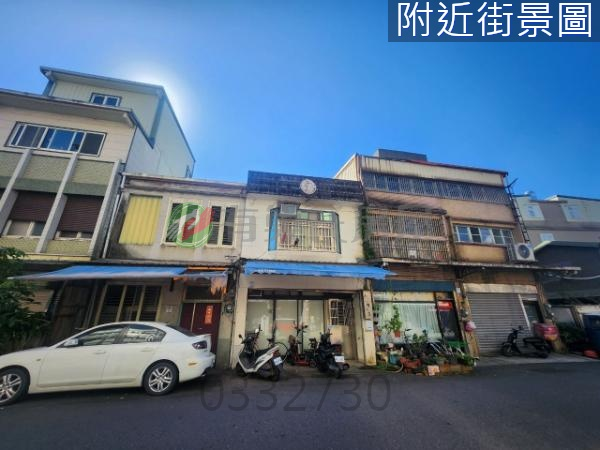
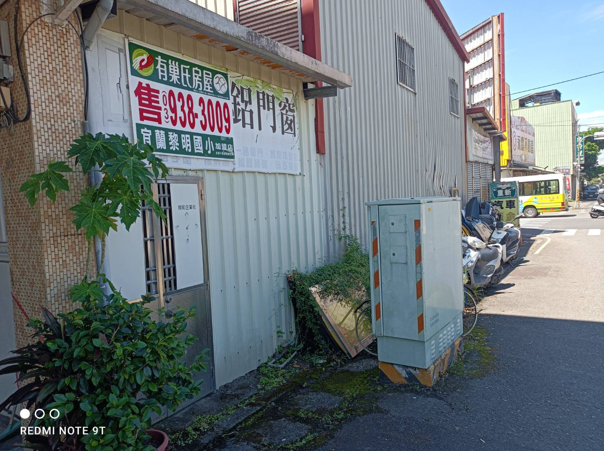

礁溪改建透天-重新裝潢出售
物件資訊
- 地址：宜蘭縣礁溪鄉龍泉路148巷18號
- 用途：住宅/透天
- 樓層：1~2樓（共2樓）
- 格局：3房2廳2衛
- 建物面積：28.072坪
- 土地面積：22.585坪
- 屋齡：44.2年
投資分析
- 底價：約400萬
- 應備現金：200萬
- 整修費用：180萬以內
- 市場行情：整修後約880萬以內
- 房地合一稅：約216萬
- 預期利潤：約100萬
特色優勢
- 郊區大地坪老屋，適合翻新自住或長期持有增值
- 位於城市邊界，環境清新，無高樓壓迫感
- 未來增值潛力高，受惠於區域基礎建設與交通發展
- 可改造為夢想家園，或用於種植、養殖，享受田園生活

東港路商業區店面
物件資訊
- 地址：宜蘭縣宜蘭市東港路二段237號
- 用途：住店/透天
- 樓層：1~2樓（共2樓）
- 建物面積：35.259坪
- 土地面積：21.493坪
- 面寬：4.5米
投資分析
- 底價：1400萬
- 應備現金：420萬（30%）
- 市場行情：1600萬
- 整修費用：無需整修
- 房地合一稅：90萬
- 預期利潤：110萬
特色優勢
- 地點優越：位於東港路，鄰近宜蘭轉運站與陽明醫院
- 明星學區：涵蓋黎明國小與中華國中
- 屋況良好：無需修繕即可使用
- 投資潛力高：店面型態，適合自用或出租
宜蘭市中心商業店面改建出售
物件資訊
- 地址：宜蘭縣宜蘭市城隍街77號
- 用途：住宅/透天
- 樓層：1~2樓（共2樓）
- 建物面積：22.748坪
- 土地面積：27.101坪
- 面臨路寬：12米
投資分析
- 底價：約700萬
- 應備現金：280萬左右
- 整修費用：100萬以內
- 市場行情：整修後約1200萬以內
- 房地合一稅：225萬左右
- 預期利潤：150萬左右
特色優勢
- 位於宜蘭市蛋黃區，傳統老街區，具文化氣息
- 市場、超市、百貨提供便利生活機能
- 公園、古蹟、園區帶來人潮，適合店住混合用途
- 具創生潛力，可注入新商業或文化價值

和睦段小建地-搭設小屋做店面
物件資訊
- 位置：宜蘭縣宜蘭市和睦段1400-0000及1401-0000地號
- 用途：土地/其他用途
- 面積：6.504坪
- 面寬：6米
- 深度：5米
- 臨路寬：10米
投資分析
- 取得成本：不超過150萬元
- 營建成本：不超過50萬
- 應備現金：300萬以內
- 整修費用：50萬
- 預期利潤：約380萬（樂觀估計）
特色優勢
- 市中心稀有小建地，適合置產
- 臨10米路，旁為中山路，商業熱鬧
- 可放貨櫃收租或自用，出租潛力高
- 用途彈性（自用、出租、倉庫）
- 低總價，投資門檻低
